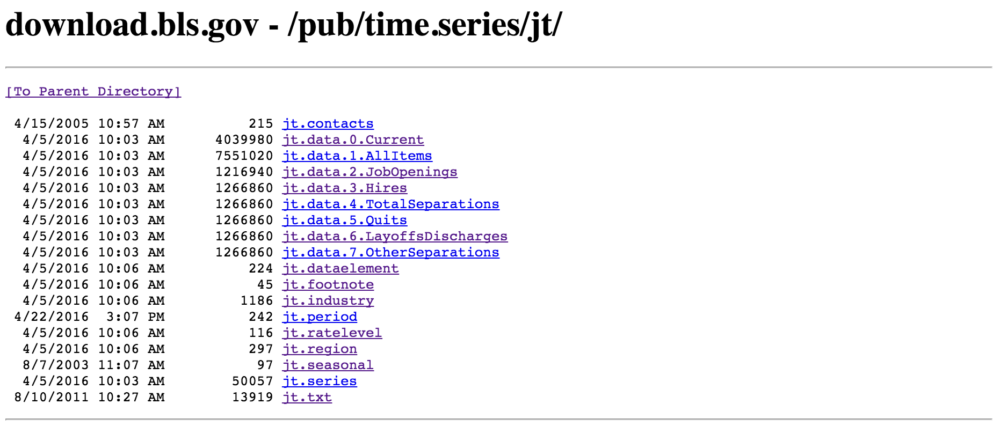
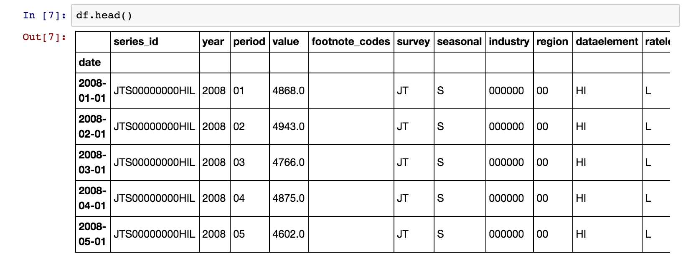
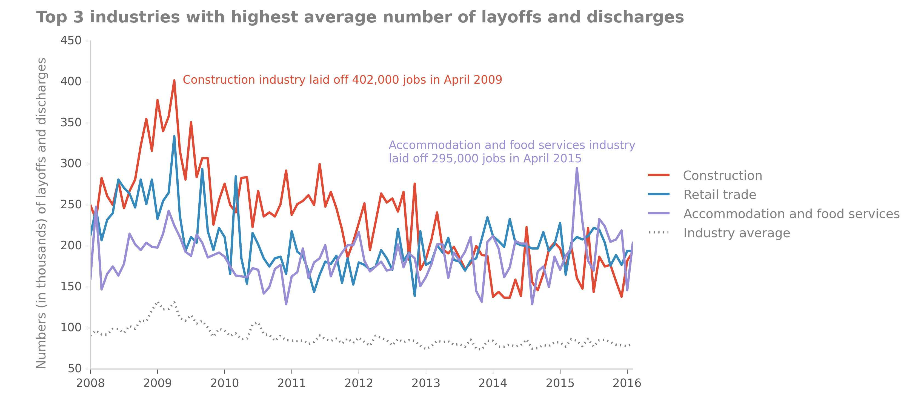
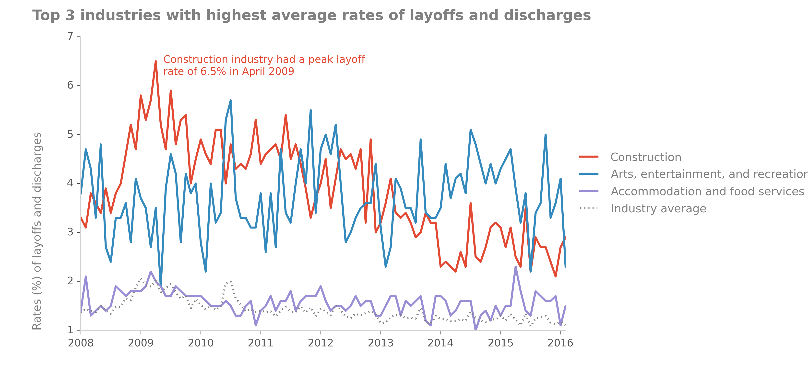
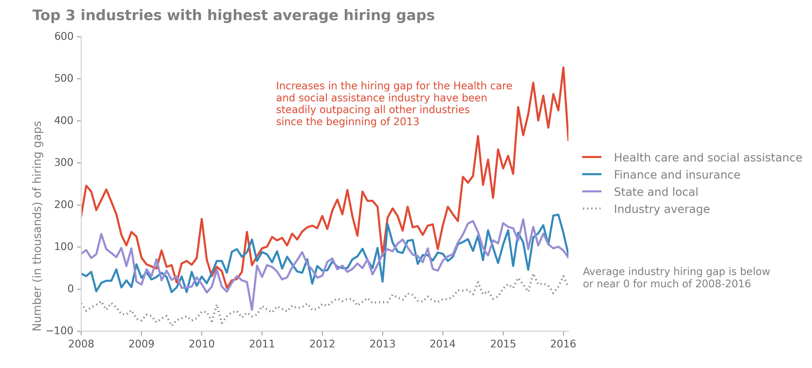
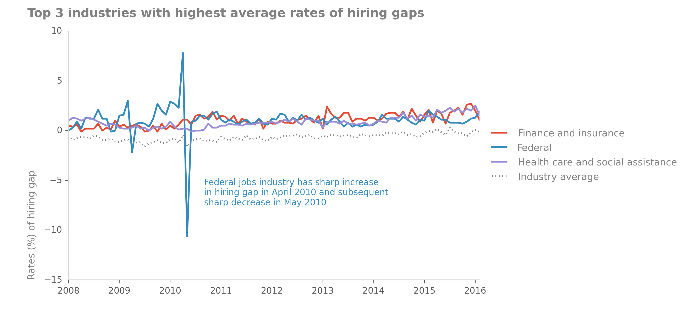
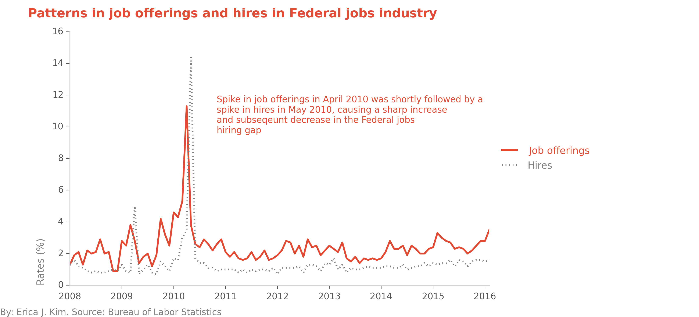

Working with data from the Bureau of Labor Statistics, part 2
See part 1 of Working with data from the Bureau of Labor Statistics
Skip to final pictures
Job Openings and Labor Turnover Survey
For the second part of this section, I'll give an example of working with one of the BLS's coded survey files.
Specifically, I want to see which industries are laying off the most people, and which industries have the
biggest hiring gaps. In order to do this, I can turn to the BLS's survey on Job Openings and Labor Turnover.
The corresponding files can be found here, on this
relatively plain looking subpage:

The majority of the data on the BLS website comes in such a format. This may look a bit strange and intimidating
at first, but it's actually quite simple to navigate and understand. The first file you should read is "jt.txt",
which gives a thorough description of the survey as well as descriptions of all of the other files in the folder.
From there, we can see which file contains the data we want (in this case, it is "jt.data.0.Current.txt"). The first
couple of lines of the file look like this:

The headings of this tab-delimited file are: "series_id", "year", "period", "value", and "footnote_code". The latter
4 columns are easy enough to figure out; however, what is "series_id"? If we go back to "jt.txt", we'll find the
following explanation:
- survey abbreviation (2 characters)
- seasonal adjustment (1 character: S [seasonally adjusted figures] or U [unadjusted])
- industry code (6 characters)
- region code (2 characters: NE-Northeast, SO-South, W-West, MW-Midwest, 00-Total US)
- data element code (2 characters: JO-Job openings, HI-Hires, LD-Layoffs and discharges, OS-other separations,
QU-quits, TS-total separations
- rate level code (1 character: R-rate, L-level in thousands)
Thus, the series_id JTS000000NEJOR can be broken out into:
survey abbreviation = JT
seasonal = S
industry code = 000000
region code = NE
data element code = JO
rate level code = R
As before, industry code refers to the North American Industry Classification System (NAICS), which is the
system that we were introducted to in part 1.
Beware of hierarchical relationships between industries
Some of the industries that are represented in the file are (NAICS code and name are both given):
- 000000 Total nonfarm
- 100000 Total private
- 480099 Transportation, warehousing, and utilities
- 520000 Finance and insurance
- 510099 Financial activities
- 900000 Government
- 920000 State and local
- 923000 State and local government education
As in part 1, we can see that different levels of industry are surveyed in the file. Total nonfarm and Total
private are HUGE categories. State and local government education is a subset of State and local, while State
and local is a subset of Government. We can distinguish the different hierarchical levels by the number of trailing
zeros. Thus, there are 6 different industry levels, ranging from the broadest industries whose NAICS codes are
comprised of just a single digit (e.g. "Government", "Total nonfarm", "Total private") to the most specific industries
whose NAICS codes have 6 digits ("Financial activities", "Transportation, warehousing, and utilities"). In this dataset,
there are 7 1-digit NAICS-coded industry groups, 15 2-digit NAICS-coded industry groups, 2 3-digit NAICS-coded industry
groups, and 4 6-digit NAICS-coded industry groups. Because they are the most represented in the data, we will focus on
the 2-digit NAICS-coded industry groups. By selecting a single industry level to work with, we can more clearly rank the
different industries and determine which industries have the most layoffs or the biggest hiring gaps.
Transforming ugly datafile into clean dataframe
Because the text file is very organized, with columns delimited by tabs, getting the data is relatively simple. The only
tricky part is to separate the series_id into different columns, and even this is a piece of cake:
JOLTS_file = "jt.data.0.Current.txt"
# separate first column into multiple columns
cols=['series_id','year','period','value','footnote_codes']
DF=pd.read_csv(JOLTS_file,delimiter="\t",names=cols,skiprows=1)
newcols=DF['series_id'].str.extract('([A-z]{2})([SU]{1})(\d{6})([A-Z0-9]{2})([A-Z]{2})([A-Z]{1})',expand=True)
newcols.columns=['survey','seasonal','industry','region','dataelement','ratelevel']
df=DF.join(newcols)
# Set index to datetime column
df=df[df['period']!="M13"] # remove annual average
df['period'] = df['period'].map(lambda x: x.lstrip('M')) # strip "M" in front of each month date
df['date']=df['year'].map(str)+"-"+df['period']+"-01" # create new date column
df['date']=pd.to_datetime(df.date, format="%Y-%m-%d") # change date column format to datetime
df=df.set_index('date') # set dataframe index to date
df.index=df.index.to_datetime() # again, set index to datetime format (maybe unnecessary)
# separate first column into multiple columns
cols=['series_id','year','period','value','footnote_codes']
DF=pd.read_csv(CE_file,delimiter="\t",names=cols,skiprows=1)
newcols=DF['series_id'].str.extract('([A-z]{2})([SU]{1})(\d{8})(\d{2})',expand=True)
newcols.columns=['survey','seasonal','industry','data_type']
df2=DF.join(newcols)
df2=df2[df2['period']!="M13"] # remove annual average
df2['period'] = df2['period'].map(lambda x: x.lstrip('M')) # strip "M" in front of each month date
df2['date']=df2['year'].map(str)+"-"+df2['period']+"-01" # create new date column
df2['date']=pd.to_datetime(df2.date, format="%Y-%m-%d") # change date column format to datetime
df2=df2.set_index('date') # set dataframe index to date
df2.index=df2.index.to_datetime() # again, set index to datetime format (maybe unnecessary)
bad_inds=["100000", "000000", "600000","900000","929000","510099","110099","300000","923000","480099","540099","400000","700000"]
criterion = df['industry'].map(lambda x: x not in bad_inds)
df = df[criterion]
We now have a clean dataframe:

Let's look at some plots of the data.
Layoffs and discharges


Hiring gap


Federal jobs industry quirks
